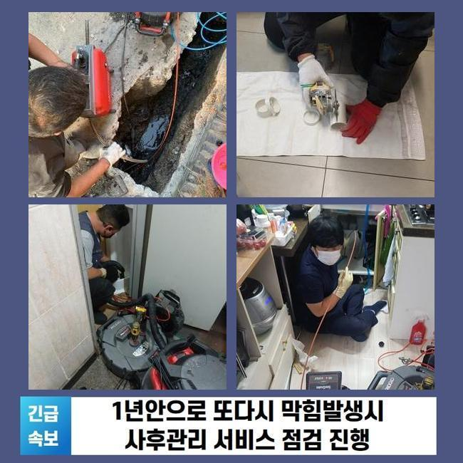
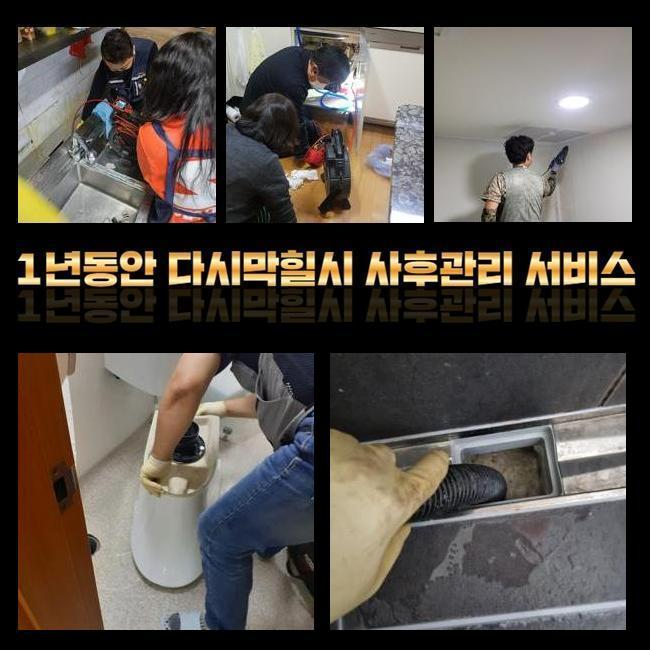
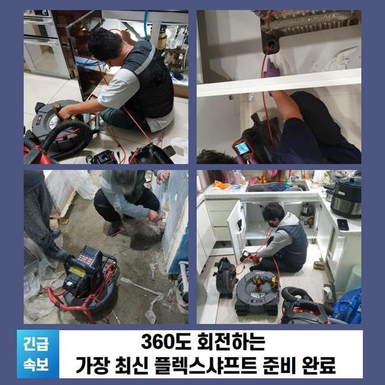
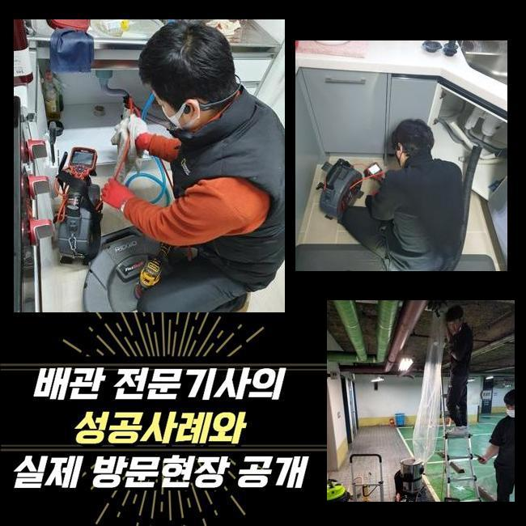
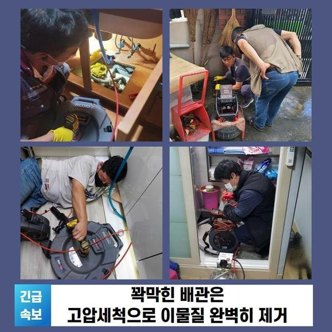
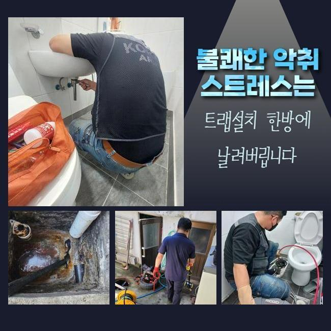
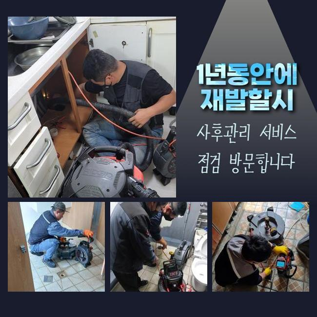

🏠 고천동화장실하수구역류 포일동 오수맨홀청소 누수
용인 싱크대막힘 전문 시공 후기

📋 작업 개요
- 위치: 용인
- 서비스 유형: 싱크대막힘, 변기막힘, 하수구막힘, 배관막힘, 맨홀막힘, 누수수리, 역류해결, 뚫는업체, 배관청소, 고압세척, 설비공사, 배관보수, 악취차단
- 작업 일시: 2025. 1. 6. 12:05
- 업체명: 하수구수사대 (010-5615-2118)
🔍 문제 상황
고천동화장실하수구역류 포일동 오수맨홀청소 누수
하수구 물이 정상 배출이 안되면 심각한 불편함을 느낄 수 있어요
가장 흔한 사건이라 함은 한 집 안의 싱크대가 이물질이 유입되어서 물의 흐름이 끊기는 케이스도 다수이며 변기설비나 바닥 배수구 세탁실 아래가 막혀버려서 정상 활용이 힘든 사태까지 찾아오기도 합니다
아파트에 사시는 고객님께 방문해달라는 연락을 받으면 개인 세대상의 오류라서 실내 쪽에서 뚫는 장치들을 가동하여 뚫어냅니다
허나 메인 배관이라면 연립주택 건물일 때는 서비스 업체를 불러서 정례적으로 관로 세척을 하기에 아예 막히는 상황은 상대적으로 적습니다
영업장이 자리한 빌딩이면 하수 문제가 나타날 확률이 아파트에 비해서는 통계적으로 많기는 합니다
이번 막힘 케이스는 상가에 장착되어 있는 주요배관이 막히는 바람에 건물 안 매장에 있는 싱크대에서 물이 새어나와서 빠른 개선이 필요하다며 문의를 넣어주셨습니다
면밀히 관찰해보니 주차장 천장 측에 내장된 메인관의 위치가 파악돼서 진행을 시작했습니다
만일 이 메인배관이 잘못되면 호실 안에 포함된 가지관의 문제라고 해석하기는 힘들며 대형 배관 속에서 훼손이 이루어졌거나 불필요한 물질이 쌓여서 통수가 부실하게 되었을 가능성이 농후합니다

🔎 원인 분석
💡 전문가 진단: 정밀 진단 장비를 사용하여 슬러지의 고착 여부를 판명하고 타격/세척 작업을 실시했습니다.
큰 흐름을 관장하는 관로부터 통로를 내고 점차 사이즈가 작은 파이프라인까지 세척합니다
천장 내부에 감춰진 배관 통로였기에 고공사다리를 두고 고쳐내기로 다짐하고 차단된 하수구 설비의 해결책이 될 장비를 옮겨두고 작동시켰습니다
위쪽만 관통한다고 해도 심층부 영역까지는 미처리 되었으므로 메인배관을 수리할 시 관로의 중앙 부근까지 빠짐없이 정리해줘야 합니다
파이프캡을 열고 충분한 여유공간을 확보하여 원활한 하수도 작업이 가능할 활동 영역을 조성했어요
배관 용도로 만들어진 내시경기로 시각적으로 확인하기 어려운 배관 상태를 점검해 보았습니다
내제된 오물의 양과 특정 구간에 막혀있을 까닭이 대체 뭔지를 시공에 뛰어들기 전 알아내야 작업 방향을 정립할 수 있게 됩니다
메인관로가 다쳤다면 보통은 파이프 규격이 넓은 편이기 때문에 소규모의 주거지에 활용하게 되는 단순한 석션으로는 수습이 힘들어요
호스 길이가 아래쪽까지 닿지 않기 때문에 배출량도 감당이 안 됩니다
기름 슬러지를 분쇄해서 스케일링하는 기능을 맡고 있는 샤프트기기 단시간만에 완료되지 않으며 구멍도 많이 뚫어야 해서 곤란할 것 같았어요

🔧 작업 과정
상업시설 안의 하수구 소통이 원활하지 못하다면 확실한 방법으로 뚫어서 기능을 회복시켜야 해요
강한 물줄기를 쏴서 접착성 좋은 이물질들이 완전히 제거될 수 있게끔 집중적으로 청소해서 관로를 티끌없는 상태로 조성해야 자꾸 막히는 사건들을 탈피할 수 있는 것입니다
관로에 여유공간이 전혀 없다면 본격적인 청소작업을 실시하기가 어려우므로 우선은 이물질을 수거하는 스프링기를 써서 가장 밀집도가 높은 섹션을 집중 타격해서 통수가 되게끔 해주고 세부적인 하수구 정비를 시작하는게 낫겠다 싶었습니다
장치를 해당 위치로 넣으려고 슬러지가 모인 구역에 전과는 다르게 개방된 이동경로를 만들어나갔어요
지금 소개하는 상가 건물은 내부에 많은 식당들이 운영되고 있었고 기름성질이 상당량 내부로 유입되고 모여서 배수관 속에 기름막이 뿌옇게 뒤덮여 있었습니다
끓는 물을 들이부어도 기름기는 개선될수 없기때문에 수분기가 마르면 석회질로 변모해서 찰싹 접착하게되는 상태가 되어버립니다
고착물이 되어버리기 전에 관로 정비를 끝내지 못한 채 장기간 가만히 둔다면 일부 구간에서부터 점점 사세를 넓혀서 결국에는 직경이 차단되어 통수가 아예 되지 않을지도 모릅니다
유분층을 형성하는 슬러지를 싹 클렌징을 해주는 방법은 최신식 고압세척기의 기능 덕택에 유연하게 오염원이 가득 찬 수로를 탈바꿈 시킬 수 있었습니다
한몸처럼 붙어있던 오물이 수압의 타격으로 사라져가는 양상을 배관용 카메라를 이용해서 봐가며 상황에 맞게 대처했습니다
꿈쩍하지 않을 듯 했던 대규모의 집합물질이 조금씩 소강되어졌고 작은 입자만 겨우 잔여했더라고요
일단 고압세척을 해야한다고 결정나면 현장마다 차이는 있겠지만 찌꺼기가 말라붙은 곳들을 전반적으로 씻어줘야 하수를 못쓸 재막힘과 같은 일련의 상황이 전개되지 않아요
변성까지 이뤄진 기름기를 고압수를 통해 분해하고 시공 전후 계속 사용하는 카메라로 다양한 구간들을 탐색하며 시공의 질을 테스트했습니다
하수도를 들여다봤던 초반 시점에는 빈틈이 아예 없다싶을 정도로 불량한 상황이었지만 여러 장비를 활용한 업무를 해준 이후에는 더러운 물질이 싹 사라지게 된 정비가 완료된 작업물을 받아보게 됐네요
물이 잘 내려가야하니 수돗물을 폐기해보는 통수검사로써 물이 걸림없이 나가는 완전히 차원이 달라진 성능을 거듭 검사를 거쳐서 보고서 시공의 마무리를 안내해드렸습니다


✅ 작업 완료
시공장비를 도달시키고자 구멍을 냈던 입구들은 빈틈을 막아줄 전용필름으로 야무지게 커버링해서 누수 상황이 벌어지지 않게 보수시공을 담당했습니다
하수시설의 공백으로 많은 불편함을 겪고 있던 상가 건물 안에 있는 물이 제깍제깍 내려가지 못하고 주방 쪽의 물 범람까지 나타났던 상황을 처리하고 작별을 고하게 됐습니다
다뤄야 할 설비가 거대하다면 쉬운 방식으로 낫기 어려운 상황이니 급한 마음을 반영해서 셀프로 처치하려 하다가 시설물이 데미지를 입는 상황까지 악화될 수 있습니다
가정집도 그렇지만 복잡다단한 상가빌딩이라도 하수관에 대한 이해를 바탕으로 정상기능을 복구시켜드리니 걱정하지 않으셔도 됩니다




⚠️ 베란다 누수 및 방수 관리 방법
- ✅ 비가 많이 올 때 창틀 주변이나 아래층 천장에 얼룩이 생기는지 정기적으로 확인해 보세요.
- ✅ 우수관 주변 실리콘 마감이 들뜨거나 깨진 틈새가 있는지 손상 여부를 수시로 체크하세요.
- ✅ 베란다 바닥 타일의 줄눈(메지)이 소실되면 그 틈으로 물이 침투하여 누수가 유발됩니다.
- ✅ 누수 의심 증상 발견 시 방치하면 아래층 손실이 커지므로 즉시 전문가의 진단을 받으십시오.
💡 핵심 정리
- 확실한 장비 작업(내시경 점검 및 샤프트 스케일링)으로 원인을 뿌리 뽑습니다.
- 작업 후 1년 이내에 동일한 부위 재발 시 100% 무상 A/S 서비스를 보장합니다.
- 서울 · 경기 · 인천 전 지역에 24시간 언제든 긴급 출동할 수 있도록 항시 대기 중입니다.
❓ 자주 묻는 질문 (FAQ)
🚨 용인 싱크대막힘 문제로 고민이신가요?
정확한 원인 진단과 확실한 시공으로 재발 없는 해결을 약속드립니다.
24시간 긴급 출동 | 서울 · 경기 · 인천 전지역 | 1년 내 재발 시 무상 A/S